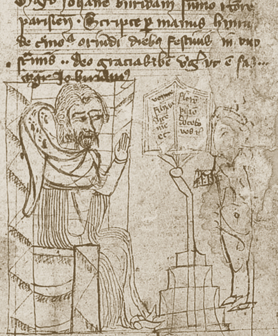
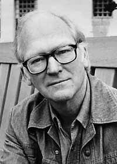

⟦⟧

Trinity College Dublin
Coláiste na Tríonóide, Baile Átha Cliath
The University of Dublin
LI7869 · Formal Semantics
Week 1
What is Meaning?
What does this mean?

G. W. F. Hegel
1770 – 1831
“Everything turns on grasping and expressing the True, not only as Substance, but equally as Subject… The living Substance is being which is in truth Subject, or, what is the same, is in truth actual only in so far as it is the movement of positing itself, or is the mediation of its self-othering with itself.”
G. W. F. Hegel, Phenomenology of Spirit (1807), Preface
Historical
Aristotle: the first formal logic

Aristotle
384 – 322 BCE · Athens
Student of Plato and tutor to Alexander the Great, Aristotle founded the Lyceum in Athens. His Organon set out the first formal system of logic, built on the categorical syllogism, and it dominated the study of reasoning for two thousand years.
Terms & propositions
Only complete propositions are true or false, a bare word like Socrates asserts nothing. A proposition joins a subject and a predicate.
Inference & contradiction
The Prior Analytics is the first formal study of valid inference . And of any contradictory pair, exactly one is true, the seed of today's tautology / contradiction.
Three classic syllogistic moods
Barbara
All men are mortal.
All Greeks are men.
∴ All Greeks are mortal.
Celarent
No reptile has fur.
All snakes are reptiles.
∴ No snake has fur.
Darii
All cats are predators.
Some pets are cats.
∴ Some pets are predators.
Historical
The Stoics: a logic of propositions

Chrysippus
c. 279 – 206 BCE · Soli
The third head of the Stoic school and its greatest logician, Chrysippus reputedly wrote over 700 works. He built the first systematic propositional logic, taking five indemonstrable arguments as its axioms. Ancient writers said that but for him, there would have been no Stoa.
The other root
Where Aristotle analysed terms, the Stoics analysed whole propositions and how they combine, the first system of propositional logic .
Connectives
They gave truth conditions for and, or, and if… then, the direct ancestor of Week 2: Sentences & Connectives, and the idea that sentences bear truth.
The five “indemonstrables” — the axioms of Stoic logic
1If p then q; p ∴ qIf day then light; it is day ∴ it is light
2If p then q; not q ∴ not pIf day then light; not light ∴ not day
3Not both p and q; p ∴ not qNot both day and night; it is day ∴ not night
4Either p or q; p ∴ not qEither day or night; it is day ∴ not night
5Either p or q; not q ∴ pEither day or night; not night ∴ it is day
Historical
The Medievals: words that stand for things

William of Ockham
c. 1287 – 1347

Jean Buridan
c. 1301 – 1360
Ockham. An English Franciscan friar and leading nominalist; he held that only individuals exist, and recast simple supposition as reference to a concept, not a universal. He gives his name to Ockham's Razor.
Buridan. A master of arts in Paris who wrote influential commentaries on Aristotle, advanced supposition theory, and tackled paradoxes such as the Liar. ‘Buridan's Ass’ is named after him.
Supposition
A theory of how a term “stands for” things: reference, plurality and tense within Aristotle's logic. The picture behind Week 3: Predicates & Sets.
Three modes of supposition — one word man, referring three ways
Personal
A man is running.
stands for individuals — Socrates, Plato, …
Simple
Man is a species.
stands for the concept / universal
Material
‘Man’ is a three-letter word.
stands for the word itself
Historical
Frege: predicate logic & compositionality

Gottlob Frege
1848 – 1925 · Jena
A German mathematician at Jena, Gottlob Frege is regarded as the father of modern logic. His 1879 Begriffsschrift introduced quantifiers and predicate logic and first stated the principle of compositionality. His work was little read until Russell and Wittgenstein took it up.
The tools
Frege's predicate logic (1879) subsumes both ancient roots, terms and propositions, and gives us the machinery of quantifiers we build on all term.
Compositionality
The meaning of a whole is determined by the meanings of its parts and how they combine.
Where this
course sits
course sits
This term we learn to break sentences apart on this principle. Putting them back together, the full compositional system, is Semantics II.
A harder example: Frege's quantifier over a nested conditional → modern FOL
The concavity binds the variable; the conditional stroke sets F(a) as antecedent (below) and G(a) as consequent (above). Frege used a Gothic letter for the bound variable.
\(\forall x\,\bigl(F(x)\rightarrow G(x)\bigr)\)
‘every F is a G’
Historical
The modern turn: truth, formalised

Alfred Tarski
1901 – 1983

Donald Davidson
1917 – 2003
Richard Montague
1930 – 1971
A Polish logician who moved to the United States in 1939 and settled at Berkeley. He gave the first rigorous definition of truth for a formal language, separating object language from metalanguage.
An American philosopher at Berkeley who proposed that a theory of meaning could take the form of a Tarskian theory of truth. His essays reshaped the philosophy of language and mind.
An American logician and student of Tarski who argued natural language can be described as precisely as symbolic logic. His ‘Montague grammar’ founded formal semantics.
The move
Tarski defined truth rigorously by splitting the object language (what we describe) from the meta-language (what we describe it in).
Then, natural language
Davidson built a theory of meaning out of a theory of truth; Montague treated language itself as formal . We pick this up in the Typological strand.
Formal
Validity: proof and truth

Kurt Gödel
1906 – 1978
An Austrian logician, later at Princeton alongside Einstein, Kurt Gödel proved the completeness of first-order logic and the celebrated incompleteness of arithmetic. His theorems showed that proof and truth can come apart.
Definition
An argument is valid if its conclusion is provable from its premises. Entailment is about truth; validity about proof.
Where they part
Usually they coincide, but not always. The most famous results here are due to Kurt Gödel .
In the handout · Exercise C: is it valid?
(1)
Every student passed. ∴ Aoife passed. ✓ valid
(2)
Some students passed. ∴ Some students did not pass. ✗ invalid
Typological
Why not just use English?
A theory of meaning pairs each sentence with a truth condition: a biconditional of the form “S” is true iff …
The T-schema: object language on the left, meta-language on the right
(1)
“Snow is white” is true iff snow is white.Looks empty: object and meta-language coincide.
(2)
“Tír gan teanga, tír gan anam” is true iff a country without a language is a country without a soul.Now the right-hand side does real work, but why privilege English to state it?
EnglishSnow is white.
IrishTá an sneachta bán.
FrenchLa neige est blanche.
Japanese雪は白い。

the condition the world must meet
Why formal, not English
This motivates a formal meta-language (logic and set theory), neutral between languages and strong enough to express truth conditions for any language, not only our own.